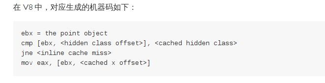
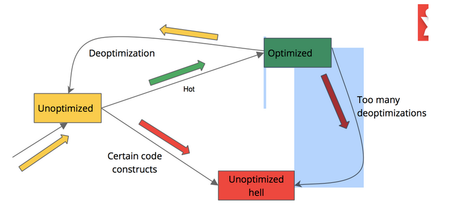

About me
- github: @fantasyni
- yixin, wechat: fantasyni
- core member from pomelo at Netease
- node.js hacker, over 3 years node experiences
- not just a code farmer, but a code poet

@fantasyni from Pomelo Netease

网易开源的基于nodejs的分布式游戏服务器引擎
pomelo 框架组成

pomelo是个真正多进程、分布式的游戏服务器。因此各游戏server(进程)的管理是pomelo很重要的部分，框架通过抽象使服务器的管理非常容易。server management 部分维护服务器的监控信息，对服务器进行管理等功能;
pomelo中的通信，包括服务器与客户端的通信，也包括服务器群中各个服务器进程之间的通信，也就是服务器间的rpc调用。请求、响应、广播、rpc、session管理等构成了整个游戏框架的脉络，所有游戏流程都构建在这个脉络上。
应用的定义、component管理、上下文配置，这些使pomelo framework的对外接口很简单， 并且具有松耦合、可插拔架构。
典型的游戏运行架构

pomelo 把游戏服务器做了抽象， 抽象成为两类：前端服务器和后端服务器

负责承载客户端请求的连接
维护session信息
把请求转发到后端
把后端需要广播的消息或响应发送到客户端
处理业务逻辑， 包括RPC和前端请求的逻辑
把消息推送回前端或者将对客户端请求的响应发送到前端服务器
基于 conversion over configuration (COC 惯例优先)原则
servers 文件夹下创建不同服务器类型的代码
handler 接口 -- 处理客户端请求
remote 接口 -- 处理RPC请求

客户端request、notify

服务器RPC

rpc 调用第一个参数为 route 参数，用于route计算，最后一个参数为cb，中间为rpc参数
app.rpc.chat.chatRemote.kick(session, uid, player, function(data){});
可以指定server则不需要route参数
pomelo.app.rpc.scheduler.jobRemote.createTask.toServer(serverId, task, cb);
session 维持着客户端与服务器之间的连接以及用户信息
session 在 handler 里不能直接操作，需要通过 proxy session 来进行
前端服务器上有 FrontendSession 代理
后端服务器上有 BackendSession 代理
AgentHandler.prototype.handleMessage = function(message, session, next) {}提供一些代理方法，比如 bind、unbind、on(事件)
由于是代理，直接在该session上set一个值是不应用于原session的，需要进行push或者pushAll
FrontendSession 代码sessionService 管理着当前服务器上的所有session信息（只在前端服务器上有）
var sessionService = pomelo.app.get('sessionService');提供一些session操作api
bind、unbind、kick、kickBySessionId
sessionService 代码服务器向客户端push消息的频道
uid(user id)、sid(前端服务器id)
var channelService = pomelo.app.get('channelService');pushMessageByUids
ChannelService.prototype.pushMessageByUids = function(route, msg, uids, opts, cb) {}broadcast
ChannelService.prototype.broadcast = function(stype, route, msg, opts, cb) {}Bearcat 是一个基于自描述js对象的应用层框架，它提供了轻量级的容器来使得这些自描述的js对象组合、协作起来构建弹性、可维护的系统
Simple POJOs + Configuration metadatas = Elastic, maintainable system
var POJO = function() {
this.$id = "pojo";
this.props = null;
}
POJO.prototype.method = function() {
}
module.exports = POJO;描述：内嵌在js对象里
容器：bearcat
var Engine = require('./engine');
var Wheel = require('./wheel');
var Car = function() {
this.engine = new Engine();
this.wheel = new Wheel();
}
Car.prototype.run = function() {
this.engine.run();
var res = this.wheel.run();
console.log('run car...');
return 'car ' + res;
}
module.exports = Car;car 必须手动去寻找 engine 和 wheel，然后去初始化，car 和 engine、wheel 之间是紧密耦合的
var Car = function($engine) {
this.$id = "car";
this.$engine = $engine;
this.$wheel = null;
}
Car.prototype.run = function() {
this.$engine.run();
var res = this.$wheel.run();
console.log('run car...');
return 'car ' + res;
}
module.exports = Car;car 不用知道 engine、wheel 从哪里来，如何初始化的，仅仅描述下，然后交给容器，最后使用即可
仅仅添加一个context配置文件 context.json
{
"name": "simple_inject",
"scan": ""
}var bearcat = require('bearcat');
var contextPath = require.resolve('./context.json');
bearcat.createApp([contextPath]);
bearcat.start(function(){
var car = bearcat.getBean('car'); // get bean
car.run(); // call the method
});[2014-05-04 18:50:41.996] [INFO] bearcat - [app] Bearcat startup in 6 ms
run engine...
run wheel...
run car...
默认情况下, scope 是单例(singleton)的
var Car = function($engine) {
this.$id = "car";
this.$scope = "singleton";
this.$engine = $engine;
this.$wheel = null;
}
Car.prototype.run = function() {
this.$engine.run();
var res = this.$wheel.run();
console.log('run car...');
return 'car ' + res;
}
module.exports = Car;var car1 = bearcat.getBean('car');
var car2 = bearcat.getBean('car');
// car1和car2是同一个实例可以设置 scope 为多例(prototype)的
var Car = function($engine) {
this.$id = "car";
this.$scope = "prototype";
this.$engine = $engine;
this.$wheel = null;
}
Car.prototype.run = function() {
this.$engine.run();
var res = this.$wheel.run();
console.log('run car...');
return 'car ' + res;
}
module.exports = Car;var car1 = bearcat.getBean('car');
var car2 = bearcat.getBean('car');
// car2 和 car1 是完全不同的两个实例初始化方法
var Car = function() {
this.$id = "car";
this.$init = "init";
this.num = 0;
this.$engine = null;
}
Car.prototype.init = function() {
console.log('init car...');
this.num = 1;
return 'init car';
}
Car.prototype.run = function() {
this.$engine.run();
console.log('run car...');
return 'car ' + this.num;
}
module.exports = Car;销毁方法
var Car = function() {
this.$id = "car";
this.$destroy = "destroy";
}
Car.prototype.destroy = function() {
console.log('destroy car...');
return 'destroy car';
}
Car.prototype.run = function() {
console.log('run car...');
return 'car';
}
module.exports = Car;异步初始化方法
var Car = function() {
this.$id = "car";
this.$init = "init";
this.$order = 2;
this.num = 0;
}
Car.prototype.init = function() {
console.log('init car...');
this.num = 1;
return 'init car';
}
Car.prototype.run = function() {
console.log('run car...');
return 'car ' + this.num;
}
module.exports = Car;异步初始化方法
var Engine = function() {
this.$id = "engine";
this.$init = "init";
this.$async = true;
this.$order = 1;
}
Engine.prototype.init = function(cb) {
console.log('init engine...');
setTimeout(function() {
console.log('asyncInit setTimeout');
cb();
}, 1000);
}
Engine.prototype.run = function() {
console.log('run engine...');
return 'wheel';
}
module.exports = Engine;Aspect-Oriented Programming (AOP) -- key unit -- aspect.
Object-Oriented Programming (OOP) -- key unit -- class.
AOP 面向切面编程，使得横切逻辑可以进行模块化，横切逻辑比如事务、日志、权限处理
var Car = function() {
}
Car.prototype.run = function() {
// pointcut
// advice code ...
console.log('Car run...');
// pointcut
// advice code ...
}var Car = function(engine) {
this.engine = engine;
this.wheel = null;
this.log = null;
}
Car.prototype.run = function() {
this.log.info('log...');
this.engine.run();
var res = this.wheel.run();
console.log('run car...');
return 'car ' + res;
}
module.exports = Car;var Engine = function() {
this.log = null;
}
Engine.prototype.run = function() {
this.log.info('log...');
console.log('run engine...');
return 'engine';
}
module.exports = Engine;var Wheel = function() {
this.log = null;
}
Wheel.prototype.run = function() {
this.log.info('log...');
console.log('run wheel...');
return 'wheel';
}
module.exports = Wheel;var Aspect = function() {
this.$id = "aspect";
this.$aop = true;
}
Aspect.prototype.doBefore = function(next) {
var $pointcut = "before:.*?run";
console.log('log...');
next();
}
module.exports = Aspect;[2014-05-04 18:50:41.996] [INFO] bearcat - [app] Bearcat startup in 6 ms
log...
run engine...
log...
run wheel...
log...
run car...事务管理是一个很好的AOP的例子
node-mysql provides simple transaction support at the connection level:
connection.beginTransaction(function(err) {
connection.query('INSERT INTO posts SET title=?', title, function(err, result) {
if (err) {
return connection.rollback(function() {});
}
var log = 'Post ' + result.insertId + ' added';
connection.query('INSERT INTO log SET data=?', log, function(err, result) {
if (err) {
return connection.rollback(function() {});
}
connection.commit(function(err) {
if (err) {
return connection.rollback(function() {});
}
console.log('success!');
});
});
});
});SimpleService.prototype.testMethodTransaction = function(cb, txStatus) {
var self = this;
this.simpleDao.transaction(txStatus).addPerson(['aaa'], function(err, results) {
if (err) {
return cb(err); // if err occur, rollback will be emited
}
self.simpleDao.transaction(txStatus).getList([1, 2], function(err, results) {
if (err) {
return cb(err); // if err occur, rollback will be emited
}
cb(null, results); // commit the operations
});
});
}配置其实就是给对象里的属性赋值，因此可以使用依赖注入（DI）来更好的完成这个任务
var Car = function() {
this.$id = "car";
this.num = "${car.num}";
}
Car.prototype.run = function() {
console.log('run car' + this.num);
return 'car' + this.num;
}
module.exports = Car;placeHolder 会被不同环境下的具体配置所替换
${car.num}then in config.json file you can define car.num with the specific value
{
"car.num": 100
}不同环境配置:
├─┬ placeholderSample/
│ ├─┬ config/
│ │ └─┬ dev/
│ │ │ └── car.json
│ │ └─┬ prod/
│ │ └── car.json
│ └── car.js
└── context.json启动时提供env参数，默认情况下是 dev
通过 env 或者 --env 参数
node app.js env=prodRun with NODE_ENV
NODE_ENV=prod node app.js日志通过 pomelo-logger模块来处理
pomelo-logger 是对 log4js 的简单封装，并提供了一些非常有用的 feature
var logger = require('pomelo-logger').getLogger('bearcat-test', 'AgentService');
getLogger 第一个参数是 category，日志都是与 category 进行对应输出到指定的文件中
getLogger 第二个之后的参数在打印日志的时候，会添加到日志开头，一般建议为当前POJO名，以便根据日志进行定位
日志的配置 log4js.json
bearcat 开发下该文件放在 config/env 下面
{
"appenders": [{
"type": "console"
}, {
"type": "file",
"filename": "logs/bearcat.log",
"maxLogSize": 104857600,
"layout": {
"type": "basic"
},
"backups": 5,
"category": "bearcat"
}, {
"type": "file",
"filename": "logs/bearcat-dao.log",
"maxLogSize": 104857600,
"layout": {
"type": "basic"
},
"backups": 5,
"category": "bearcat-dao"
}, {
"type": "file",
"filename": "logs/nscheduler.log",
"maxLogSize": 104857600,
"layout": {
"type": "basic"
},
"backups": 5,
"category": "nscheduler"
}],
"levels": {
"bearcat": "DEBUG",
"bearcat-dao": "DEBUG",
"nscheduler": "DEBUG",
"pomelo": "ERROR",
"pomelo-rpc": "ERROR",
"pomelo-admin": "ERROR"
},
"replaceConsole": false,
"lineDebug": true
}具体配置可以参照pomelo-logger配置
单元测试、测试覆盖率
测试框架 mocha
断言库 expect.js
var expect = require("expect.js")
describe('Array', function(){
describe('#indexOf()', function(){
it('should return -1 when the value is not present', function(){
expect(-1).to.eql([1,2,3].indexOf(5));
expect(-1).to.eql([1,2,3].indexOf(0));
})
})
})测试覆盖率结合 grunt 完成
grunt自动化构建工具
可以配置单元测试、clean、打包、browserify化、jshint检查等等任务
简单执行grunt即可运行任务
grunthttp request module
var request = require('request');
request('http://www.google.com', function (error, response, body) {
if (!error && response.statusCode == 200) {
console.log(body) // Print the google web page.
}
})streaming
request('http://google.com/doodle.png').pipe(fs.createWriteStream('doodle.png'))fs.createReadStream('file.json').pipe(request.put('http://mysite.com/obj.json'))form 提交
application/x-www-form-urlencoded
request.post('http://service.com/upload', {form:{key:'value'}})
multipart/form-data
var r = request.post('http://service.com/upload', function optionalCallback(err, httpResponse, body) {});
var form = r.form();
form.append('my_field', 'my_value');
form.append('my_buffer', new Buffer([1, 2, 3]));
form.append('custom_file', fs.createReadStream(__dirname + '/unicycle.jpg'), {filename: 'unicycle.jpg'});
request(options, callback)
https://github.com/request/request#requestoptions-callbackheaders
timeout
pool
proxy
localAddress
...
单步调试 node-inspector
对于单进程 node-debug app.js 即可
多进程
node-inspector
pgrep -l node
kill -s USR1 2345打开浏览器即可调试 http://127.0.0.1:8080/debug?port=5858
编写高性能javaScript以及对v8相关技术
声明变量带上 var
不带var的变量比var变量性能低
谨慎使用全局变量
对于常用的全局变量，用 局部变量进行缓存能提高性能
合理使用闭包
function f1(){
var n = 999;
function f2(){
alert(n);
}
return f2;
}
var result=f1();
result(); // 999上面的n会一直在内存中存在，除非手动delete
合理使用闭包
var myObj = {
callMeMaybe: function () {
var myRef = this;
var val = setTimeout(function () {
console.log('Time is running out!');
myRef.callMeMaybe();
}, 1000);
}
};myObj=null;myObj对象不会被释放掉，因为内部的myRef对象也指向了myObj， 而内部的setTimeout调用使会将闭包加到node.js事件循环的队列里，因此myRef对象不会释放。
避免在for循环中使用try catch
try {
for (var i = 0; i < 200; i++) {}
} catch (e) {}nodejs 中异步方法无法try-catch
使用for代替for...in遍历数组
var a = [];
a[5] = 5; // 数组自动填充
var a = [];
a[5] = 5;
for (var x in a) {
// Shows only the explicitly set index of "5", and ignores 0-4
}node.js 中绝大多数 api 都是异步的，流程控制要在异步回调中处理
https://github.com/caolan/async异步方法，在回调第一个参数err处理，底层方法直接cb(err)往上抛即可，上层调用方再去判断异常是否存在并打日志 err.stack
不要试图用 try catch 去捕获一个异步方法的异常
全局异常捕获要加上以免进程退出
// Uncaught exception handler
process.on('uncaughtException', function(e) {
logger.error('Caught exception: ' + e.stack);
});v8 优化
隐藏类(hidden class)
v8 会为对象动态的创建隐藏类来加快对象属性的访问速度
function Point(x, y) {
this.x = x;
this.y = y;
}v8 优化
内联缓存(inline cache)
v8 在第一次访问对象属性时，会先找到隐藏类
修改对应的内联代码让其他对象属性使用该隐藏类
如果命中，则一条指令即可找到
如果miss，则修改内联cache
v8 优化
两次编译与反优化(Crankshaft)
现代javaScript运行时引擎都会进行编译
V8 有两个不同的运行时(JIT)编译器
一开始，所有的v8代码都运行在unoptimized状态，好处是编译速度非常快，代码初次运行快
v8发现热代码时，会根据通常的执行路径进行优化，生成optimized代码，优化代码执行非常快
编译器有可能从"优化"状态退回到"完全"状态，这就是deoptimized
最惨的是不停的被optimized，然后又被deoptimized，这会带来很大的性能损耗
v8 优化
两次编译与反优化(Crankshaft)
v8 优化
隐藏类优化
v8 优化
隐藏类优化
function Point(x, y) {
this.x = x;
this.y = y;
}
var p1 = new Point(11, 22);
var p2 = new Point(33, 44);
// At this point, p1 and p2 have a shared hidden class
// 这里的p1和p2拥有共享的隐藏类
p2.z = 55;
// warning! p1 and p2 now have different hidden classes!
// 注意！这时p1和p2的隐藏类已经不同了！v8 优化
隐藏类优化
function Point(x, y) {
this.x = x;
this.y = y;
}
for (var i=0; i<1000000; i++) {
var p1 = new Point(11, 22);
delete p1.x;
p1.y++;
}以上例子由于调用了delete，将导致hidden class产生变化，导致p1.y不能用inline cache直接获取
以上程序在使用了delete之后耗时0.339s,在注释掉delete后只需0.05s
v8 优化
deoptimized优化
如果一个操作的输入总是相同类型的，则其为单态操作。否则，操作调用时的某个参数可以跨越不同的类型，那就是多态操作
function add(x, y) {
return x + y;
}
add(1, 2); // add中的+操作是单态操作
add("a", "b"); // add中的+操作变成了多态操作v8 优化
v8 array
为了掌控大而稀疏的数组，V8内部有两种数组存储方式
最好别导致数组存储方式在两者之间切换
v8 优化
v8 array 优化
v8 优化
v8 array 优化
a = new Array();
for (var b = 0; b < 10; b++) {
a[0] |= b; // 杯具！
}a = new Array();
a[0] = 0;
for (var b = 0; b < 10; b++) {
a[0] |= b; // 比上面快2倍
}以上两段代码，由于第一段代码的a[0]未初始化， 尽管执行结果正确，但会导致执行效率的大幅下降。
/
#